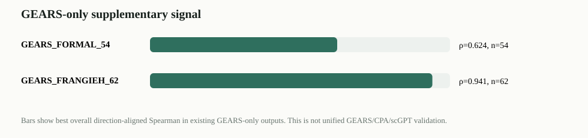

E19 GEARS-only supplement
整理本地已有 GEARS-only 结果。它可以作为补充证据，不能写成 GEARS/CPA/scGPT 已完成统一模型级验证。

1. Source summary
| source_id | source_label | source_status | exists | n_records | n_scores | n_datasets | datasets | best_score_name | best_aligned_spearman | best_n | has_uncertainty_confidence | boundary |
|---|---|---|---|---|---|---|---|---|---|---|---|---|
| GEARS_FORMAL_54 | Norman/Adamson/Dixit formal | formal_existing | True | 54 | 54 | 3 | adamson,dixit,norman | gears_prediction_magnitude_risk | 0.623937 | 54 | False | GEARS-only; no native uncertainty; not aligned with sciplex3/CPA/scGPT. |
| GEARS_FRANGIEH_62 | Frangieh third-predictor run03 | supplement_probe_existing | True | 62 | 124 | 1 | frangieh | gears_prediction_magnitude_risk | 0.941125 | 62 | True | GEARS-only Frangieh run; source name contains smoke lineage; use as supplementary signal, not main formal claim. |
2. Dataset summary
| source_id | source_label | dataset_name | n_records | n_unique_perturbations | n_seeds | mean_rmse | median_rmse |
|---|---|---|---|---|---|---|---|
| GEARS_FORMAL_54 | Norman/Adamson/Dixit formal | adamson | 21 | 18 | 3 | 0.042086 | 0.034761 |
| GEARS_FORMAL_54 | Norman/Adamson/Dixit formal | dixit | 3 | 2 | 3 | 0.424841 | 0.371982 |
| GEARS_FORMAL_54 | Norman/Adamson/Dixit formal | norman | 30 | 27 | 3 | 0.055878 | 0.052180 |
| GEARS_FRANGIEH_62 | Frangieh third-predictor run03 | frangieh | 62 | 58 | 3 | 0.038370 | 0.034156 |
3. Evaluation summary
| source_id | source_label | source_status | level | dataset_family | dataset_name | score_name | score_type | n | spearman_score_vs_rmse | direction_aligned_spearman | mean_rmse | risk_cov_improve_pct |
|---|---|---|---|---|---|---|---|---|---|---|---|---|
| GEARS_FORMAL_54 | Norman/Adamson/Dixit formal | formal_existing | dataset | gears_supplement | adamson | gears_prediction_magnitude_risk | risk | 21 | 0.422078 | 0.422078 | 0.042086 | 0.812960 |
| GEARS_FORMAL_54 | Norman/Adamson/Dixit formal | formal_existing | dataset | gears_supplement | dixit | gears_prediction_magnitude_risk | risk | 3 | 0.500000 | 0.500000 | 0.424841 | 0.000000 |
| GEARS_FORMAL_54 | Norman/Adamson/Dixit formal | formal_existing | dataset | gears_supplement | norman | gears_prediction_magnitude_risk | risk | 30 | 0.623582 | 0.623582 | 0.055878 | 7.609899 |
| GEARS_FORMAL_54 | Norman/Adamson/Dixit formal | formal_existing | family | gears_supplement | ALL | gears_prediction_magnitude_risk | risk | 54 | 0.623937 | 0.623937 | 0.071013 | NaN |
| GEARS_FORMAL_54 | Norman/Adamson/Dixit formal | formal_existing | overall | ALL | ALL | gears_prediction_magnitude_risk | risk | 54 | 0.623937 | 0.623937 | 0.071013 | NaN |
| GEARS_FRANGIEH_62 | Frangieh third-predictor run03 | supplement_probe_existing | dataset | gears_supplement | frangieh | gears_prediction_magnitude_risk | risk | 62 | 0.941125 | 0.941125 | 0.038370 | 12.817707 |
| GEARS_FRANGIEH_62 | Frangieh third-predictor run03 | supplement_probe_existing | dataset | gears_supplement | frangieh | gears_uncertainty_confidence | confidence | 62 | 0.201430 | -0.201430 | 0.038370 | 1.029774 |
| GEARS_FRANGIEH_62 | Frangieh third-predictor run03 | supplement_probe_existing | family | gears_supplement | ALL | gears_prediction_magnitude_risk | risk | 62 | 0.941125 | 0.941125 | 0.038370 | NaN |
| GEARS_FRANGIEH_62 | Frangieh third-predictor run03 | supplement_probe_existing | family | gears_supplement | ALL | gears_uncertainty_confidence | confidence | 62 | 0.201430 | -0.201430 | 0.038370 | NaN |
| GEARS_FRANGIEH_62 | Frangieh third-predictor run03 | supplement_probe_existing | overall | ALL | ALL | gears_prediction_magnitude_risk | risk | 62 | 0.941125 | 0.941125 | 0.038370 | NaN |
| GEARS_FRANGIEH_62 | Frangieh third-predictor run03 | supplement_probe_existing | overall | ALL | ALL | gears_uncertainty_confidence | confidence | 62 | 0.201430 | -0.201430 | 0.038370 | NaN |
4. Boundary
GEARS-only supplement does not provide CPA/scGPT vectors and does not align to sciplex3 full-743.